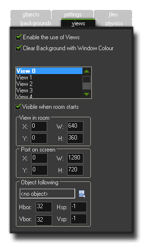

Views give a mechanism for drawing different parts of your room
at different places on the screen, or for drawing just a part of
your room to cover the whole screen. For example, in most platform
games, the view follows the main character, as if you could see the
whole level on the screen your character would be too small
to see and there would be no surprises for the player! Views can
also be used in two-player games, as they permit you to create a
split-screen setup in which in one part of the screen you see one
player and in another part you see the other player. A third use is
in games in which part of the room should scroll (e.g. with the
main character) while another part is fixed (for example some
status panel). This can all be easily achieved in GameMaker:
Studio using views.
 At
the top of the views tab there is a box labelled Enable the use
of Views, and this must be flagged before any of the views can
be active in a game. The next checkbox is the one that says Clear
Background with Window colour, which clears the application surface
with the window colour, and can be unchecked if you know that you
are drawing to cover the whole surface.
Below this you see the list of available views (you can define a
maximum of eight) with the information about where these views are
to be drawn contained in the boxes below. First of all you must
indicate whether the view should be Visible when the room
starts by checking the appropriate box, and if you wish to use
views, make sure at least one view is visible at the start of every
room. Visible views are shown in bold in the view list above
this.
A view is defined by two different sets of values, the view itself and the port on the screen. This can sometimes cause confusion so let's explain this a bit before explaining how we define each of them:
So, this means that you can have a 640x480 view into your room,
and then set the port to 320x240, which will display the view
scaled down to that sized port on the screen, and you can
also do the same and set the view to a smaller value and the port
to larger making the image scale up to fit the port size and
be shown on the screen larger than it is. In this way you can
maintain a screen (port) size while changing the view and display
more or less of the room in the same area of the screen.
The view is always defined as a rectangular area in the room, where
you specify the position of the top-left corner, the width and the
height of this area. Then you must specify where this area is shown
in the window on the screen by defining the view port, where again
you specify the position of the top-left corner and the size (note
that anything other than 0,0 for the top left corner can give
strange results). You can have more than one port and they can
overlap, in which case they are drawn in the indicated order one on
top of the other. Please realise that the over all screen area is
always defined as a rectangular area, so your ports, even when
offset, will form a rectangle, with any empty spaces being filled
in by the window colour, meaning that in these circumstances you
should always have Clear Background with Window colour
checked or else you will get odd artefacts drawn in the spaces
between ports.
NOTE: On Windows SurfaceRT devices, there is a canvas
limit of 2048x2048, which means the drawing canvas cannot go above
those dimensions (neither with views, nor by setting the game
window directly) otherwise your game graphics will be corrupted or
degraded.
The "Object Following" option is for when you want the view to
"follow" (ie: maintain the view focused on) a certain object. To do
this you must click on the menu icon and select an object from the
list that pops up (if there are multiple instances of this object
in the room, only one of them is followed by the view). The normal
behaviour for a view is to only move when the instance being
followed gets too close to a "buffer" zone that makes an invisible
boundary around the edge of the view. This zone can be defined by
you using the Hbor and Vbor values, where Hbor
is the horizontal border zone, and Vbor is the vertical
border zone. So, setting these values to, for example, 64, will
mean that the view will not start to move and follow the character
until he reaches 64 pixels from the edge of the view.
Finally you can indicate the speed at which the view moves when the
character has reached the buffer zone, and this has a default value
of -1. This default value is basically "instantaneous" and means
that the moment the follow object is outside the Hbor or Vbor
buffer zone, the view will skip to its current position. Now, this
is not always what you want and so you can set the vertical and
horizontal scrolling speed for the view by setting the values for
Hsp and Vsp to something other than -1. Note that a
value of 0 will cause the view to not move at all, and any other
positive value is how many pixels it will move in any step, so
setting the Hsp to 5 will have the view follow the object at
5 pixels per step horizontally.